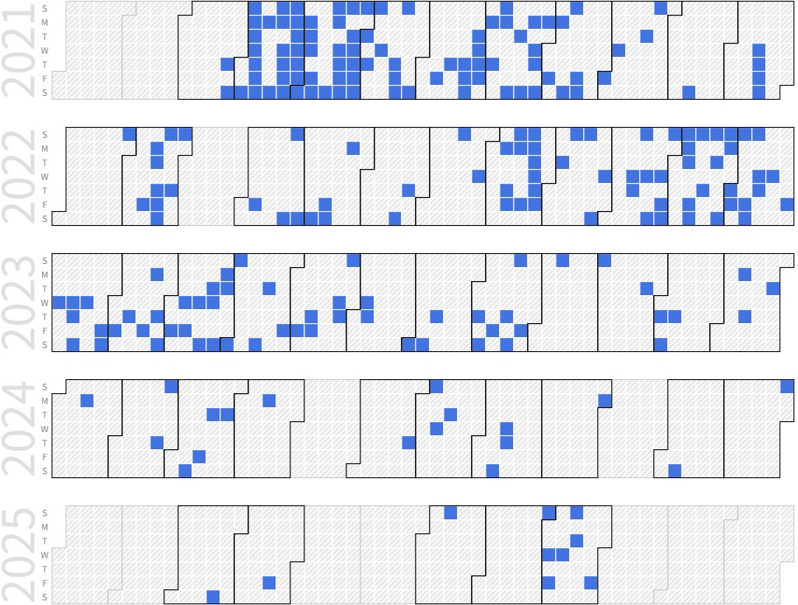
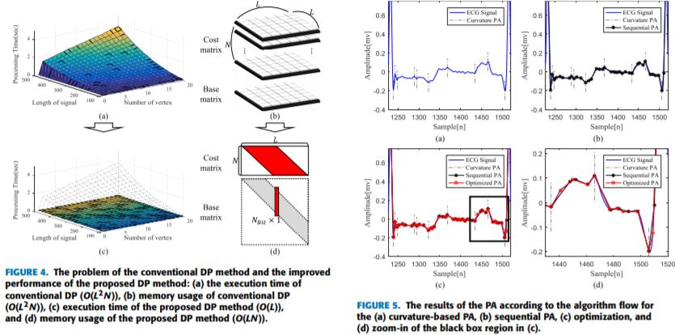

Seungmin Lee (Post Doctoral Researcher)
Post Doctoral Researcher. |
Repository Commit History
|  |
Introduction
Full Bio Sketch
Dr. Lee received B.S. and M.S. degrees in Mathematics from Kyungpook National University (KNU), in Daegu, Korea in 2010 and 2012, respectively. He expanded his research topics to the bio-inspired signal processing algorithm and electronics systems. He received his Ph.D. degree in Electronics Engineering at KNU in 2018. His research interest includes signal processing, image processing, bio-inspired signal processing, and compact system implementation. He is now with KNU as Post-doctoral researcher, supported by NRF grants.
Research Topic
Arrhythmia is less frequent than a normal heartbeat in an electrocardiogram signal, and the analysis of an electrocardiogram measurement can require more than 24 hours. Therefore, the efficient storage and transmission of electrocardiogram signals have been studied, and their importance has increased recently due to the miniaturization and weight reduction of measurement equipment. The polygonal approximation method based on dynamic programming can effectively achieve signal compression and fiducial point detection by expressing signals with a small number of vertices. However, the execution time and memory area rapidly increase depending on the length of the signal and number of vertices, which are not suitable for lightweight and miniaturized equipment. In this paper, we propose a method that can be applied in embedded environments by optimizing the processing time and memory usage of dynamic programming applied to the polygonal approximation of an ECG signal. The proposed method is divided into three steps to optimize the processing time and memory usage of dynamic programming. The first optimization step is based on the characteristics of electrocardiogram signals in the polygonal approximation. Second, the size of a data bit is used as the threshold for the time difference of each vertex. Finally, a type conversion and memory optimization are applied, which allow real-time processing in embedded environments. After analyzing the performance of the proposed algorithm for a signal length L and number of vertices N, the execution time is reduced from O(L 2N) to O(L), and the memory usage is reduced from O(L 2N) to O(LN). In addition, the proposed method preserve a performance of fiducial point detection. In a QT-DB experiment provided by Physionet, achieving values of -4.01 ± 7.99 ms and -5.46 ± 8.03 ms
|  |
Research Grants
2018.09-2020.08 A Research on the Fiducial Point Detection Method based on Linear Approximation for Arrhythmia Classification and Signal Compression of ECG Signal, as a role of PI, supported by NRF (Ministry of Education)
2020.06-2023.05 A Research on the Fiducial Point Detection and Arrhythmia Classification based on Linear Apploximation of ECG Signal, as a role of PI, supported by NRF (Ministry of Education)
Publications
Journal Publications (KCI 2, SCOPUS 2, SCI 10)
S. Lee, D. Park, and K. H. Park. QRS Complex Detection Based on Primitive (SCI) Journal of Communications and Networks, 19(5):442-450, 2017.
Seungmin Lee, Yoosoo Jeong, Daejin Park, Byoung-Ju Yun, and Kil Houm Park. Efficient Fiducial Point Detection of ECG QRS Complex Based on Polygonal Approximation (SCI) Sensors, 18(12):4502-4517, 2018.
Yoosoo Jeong, Seungmin Lee, Daejin Park, and Kil Houm Park. Accurate Age Estimation Using Multi-Task Siamese Network-Based Deep Metric Learning for Frontal Face Images (SCI) Symmetry, 10(9):1-15, 2018.
S. Lee, Y. Jeong, J. Kwak, D. Park, and K. H. Park. Advanced Real-Time Dynamic Programming in the Polygonal Approximation of ECG Signals for a Lightweight Embedded Device (SCI) IEEE Access, 7:162850-162861, 2019.
Seungmin Lee and Daejin Park. Communication-Power Overhead Reduction Method using Template-Based Linear Approximation in Lightweight ECG Measurement Embedded Device (KCI) IEMEK Journal of Embedded Systems and Applications, 2020.
S. Lee, D. Park. Real-Time Abnormal Beat Detection Method using Template Cluster for ECG Diagnosis on IoT Devices (SCI) Human-centric Computing and Information Sciences, 2021.
S. Lee, D. Park. Template-Based Local Linear Approximation Using Modified Dynamic Programming for Lightweight ECG Signal Processing on Edge Devices (SCOPUS) Journal of Information Processing Systems, 2021.
Seungmin Lee, Daejin Park. Efficient Template Cluster Generation for Real-Time Abnormal Beat Detection in Lightweight Embedded ECG Acquisition Devices (SCI) IEEE Access, 2021.
Seungmin Lee and Daejin Park. Adaptive ECG Signal Compression Method Based on Look-ahead Linear Approximation for Ultra Long-Term Operating of Healthcare IoT Devices (SCI) Human-centric Computing and Information Sciences (HCIS), 2021.
Dongkyu Lee, Seungmin Lee, Sejong Oh, and Daejin Park. Energy-Efficient FPGA Accelerator with Fidelity-Controllable Sliding-Region Signal Processing Unit for Abnormal ECG Diagnosis on IoT Edge Devices (SCI) IEEE Access, 2021
Seungmin Lee and Daejin Park. Improved Dynamic Programming in Local Linear Approximation Based on a Template in a Lightweight ECG Signal-Processing Edge Device (SCOPUS) Journal of Information Processing Systems, 2022.
Seungmin Lee and Daejin Park. Abnormal Beat Detection from Unreconstructed Compressed Signals Based on Linear Approximation in ECG Signals Suitable for Embedded IoT Devices (SCI) Journal of Ambient Intelligence and Humanized Computing, 2021
Jinkyung Bae, Minsoo Kwak, Kyeungkap Noh, Dongkyu Lee, Seungmin Lee, and Daejin Park. Comparative Learning based Deep Learning Algorithm for Abnormal Beat Detection using Imaged Electrocardiogram Signal (KCI) Journal of the Korea Institute of Information and Communication Engineering, 2021.
Seungmin Lee and Daejin Park. Comparative Neural Network based on Template Cluster for Automated Abnormal Beat Detection in Electrocardiogram Signals (SCI) Human-centric Computing and Information Sciences (HCIS), 2021.
Seungmin Lee, Jisu Kwon, and Daejin Park. Optimized Replication of ADC-based Particle Counting Algorithm with Reconfigurable Multi-Variables in Pseudo-Supervised Digital Twining of Reference Dust Sensor Systems (SCI) (On Writing) IEEE Access, 2021.
Jisu Kwon, Seungmin Lee, and Daejin Park. Simulated Annealing-based Fast Replication of Reconfigurable Multi-Variables for Digital Twining of Particle Counting Algorithm in Dust Sensor Systems (SCI) (On Writing) IEEE Access, 2021.
Seungmin Lee, Jisu Kwon, and Daejin Park. Runtime Tracking-based Replication of Dust Particle Sensor Algorithm using Transfer Function Learning for Dust Sensor Systems (SCI) (On Writing) IEEE Access, 2021.
Jisu Kwon, Seungmin Lee, and Daejin Park. Efficient Dust Particle Counter Realization using Runtime Adapation of Segmented Transfer Function for Lightweighted Microcontroller-based Dust Sensor Systems (SCI) (On Writing) IEEE Access, 2021.
Conference Publications (Intl. 109)
J. Kwak, S. Kim, S. Lee, J. Cho, and D. Park. Energy-Efficient ECG Event Signal Processing Using Primitive-Based QRS Complex Detection In 2018 IEEE 7th Global Conference on Consumer Electronics (GCCE), pages 215-216, Oct 2018.
S. Lee, Y. Jeong, J. Kwak, D. Park, and K. H. Park. Efficient Communication Overhead Reduction Using Polygonal Approximation-Based ECG Signal Compression In 2019 International Conference on Artificial Intelligence in Information and Communication (ICAIIC), pages 058-061, Feb 2019.
S. Lee and D. Park. Enhanced Dynamic Programming for Polygonal Approximation of ECG Signals In 2020 IEEE 2nd Global Conference on Life Sciences and Technologies (LifeTech), pages 121-122, 2020.
Seungmin Lee and Daejin Park. Real-Time Abnormal Beat Detection Method by using Template Cluster for ECG Diagnosis on IoT Devices In The International Conference on Big data, IoT, and Cloud Computing (BIC-20), 2020.
Seungmin Lee and Daejin Park. Template Based Local Linear Approximation by using Modified Dynamic Programming for Lightweighted ECG Signal Processing on Edge Devices In The International Conference on Big data, IoT, and Cloud Computing (BIC-20), 2020.
Seungmin Lee and Daejin Park. Abnormal Beat Detection from Unreconstructed Compressed Signals based on Linear Approximation in ECG signals Suitable for Embedded IoT Devices In The 12th International Conference on Computer Science and its Applications (CSA2020), 2020.
Seungmin Lee and Daejin Park. An Efficient Communication-Overhead-Reduction Algorithm Using Template-based Adaptive Signal Compression in Lightweight Embedded IoT Devices In The 12th International Conference on Computer Science and its Applications (CSA2020), 2020.
Seungmin Lee, Dongkyu Lee, and Daejin Park. Binary Classification for Linear Approximated ECG Signal in IoT Embedded Edge Device In IEEE ICUFN 2021, 2021.
Dongkyu Lee, Seungmin Lee, and Daejin Park. FPGA-based Cloudification of ECG Signal Diagnosis Acceleration In IEEE ICUFN 2021, 2021.
Jinkyung Bae, Minsoo Kwak, Kyeungkap Noh, Dongkyu Lee, Seungmin Lee, and Daejin Park. A Study on the Effectiveness of the Comparative Neural Network Model for Abnormal Beat Detection in Electrocardiogram Signals In IEEE ICCE-Asia 2021, 2021.
Participation in International Conference
IEEE ICAIIC 2019, Okinawa, Japan
IEEE LifeTech 2020, Osaka, Japan
IEEE ICUFN 2021, Jeju, Korea
IEEE ICCE-Asia 2021, Gangwon, Korea